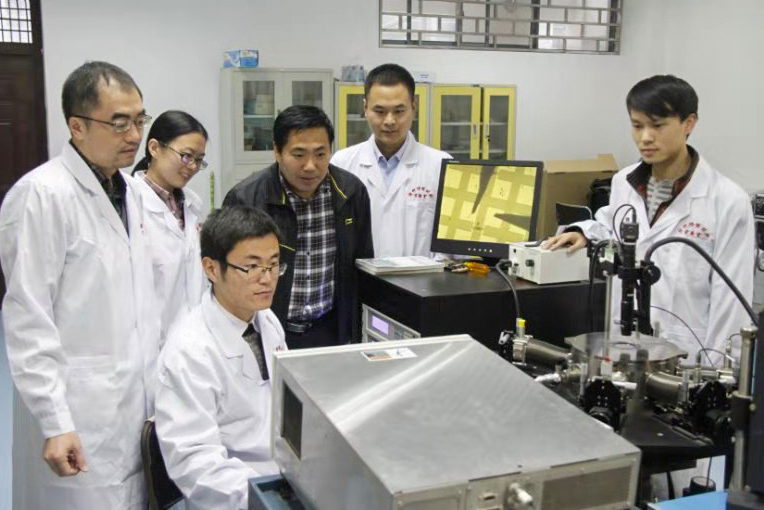
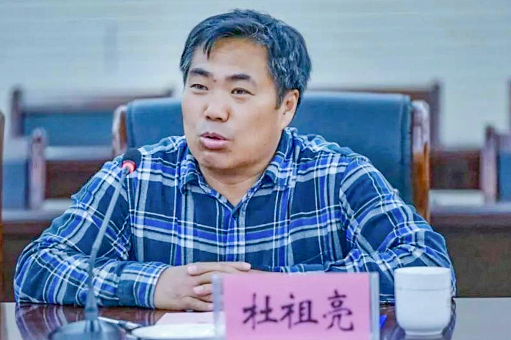

- 中共中央统一战线工作部
- 中共河南省委统战部
- 开封市统战部
- 河南大学
- "河大统战"杂志
杜祖亮：仰望星空 脚踏实地 发布时间：2019-12-12 09:05:40 作者：胡彬彬 李艺 曹赛赛 坚持：选定远方便只顾风雨兼程 坚守：一张蓝图绘到底 坚定：演绎人才培育的传奇

杜祖亮，男，1966年生，博士，教授，博士生导师，中原学者。现任高效显示与照明技术国家地方联合工程研究中心主任、特种功能材料教育部重点实验室主任、河南大学党外知识分子联谊会会长、材料学院院长。教育部“长江学者和创新团队发展计划”创新团队牵头人，教育部新世纪优秀人才，享受政府特殊津贴专家，河南省优秀专家，河南省特聘教授。中国化学会超分子专业委员会委员、中国化学会纳米化学专业委员会委员、中国物理学会发光分会委员、中国仪器仪表学会微纳器件与系统技术分会委员。
“科研之路没有捷径。要坐得住，甘于寂寞；要能坚持，心无旁骛。”面对如何让科研出彩这一问题，杜祖亮给出的答案显得朴实而直白。在他的世界里，成功只是努力与坚持，但若纵观其艰难困苦，百折不挠，带领特种功能材料重点实验室披荆斩棘，一路向前的历程，会发现其对科研由衷的热爱和矢志坚持，对理想永不放弃的坚守，对人才培育这一强基固本、抢占制高点策略的坚定才是其成功路上的关键词。
熟悉杜祖亮的人都知道，其恩师朱自强先生是他人生历程中一个重要角色。老先生是中国实验物理学奠基人之一胡刚复先生的关门弟子，与吴有训、严济慈、李政道、余瑞璜有同门之谊，学养深厚，贯略东西。凭着一种对科学的赤诚和施展抱负的雄心，朱先生于1985年底来到河南大学，在理工学科一片荒芜，科研条件一穷二白的基础上，自力更生，艰苦创业，组建起了实验室，培养了一大批青年人才，奠定了学校理工科长远发展的家底。杜祖亮跟着先生经历了艰难创业的过程，他亲手用旧家具改装过实验台，用木框和塑料布搭建过“土造”超净间，他自嘲说他做过木工、泥工、油漆工和玻璃工。但他真正从先生那里继承而来的是对科研的由衷热爱，对事业的矢志坚守和对困难磨难的大无畏精神。及至今日，他仍时时提起先生当年对他叮嘱的话：“中国不可能都去靠经商来改变国家的命运，大家千万不能跟风，要脚踏实地，要坚守下去”；“社会不是千篇一律、所有人都做一个工作，科学工作还是要有人来做的，只有科学的进步才能推动我们国家和社会的发展。”

历经了筚路蓝缕创业之艰辛，感召于自强不息先辈之精神，杜祖亮在科研的道路上走的执着而平静。在大家的印象中，他常年累月地没有节假日，没有星期天，没有八小时之外的时间，工作至深夜甚至通宵达旦是他多年的习惯。诚如他的老师当年跟他说过的那样：“一个科学家没有八小时内外，必须全力以赴，脑袋中时刻装着问题”；“科研上要耐得住寂寞，不能功利浮躁，不能追求形式上的东西。”为了完成先生未完成的“大文章”，杜祖亮三十年如一日，在科研之路上深耕不辍、砥砺前行，在困难面前没有放弃，在“下海潮”中没有动摇，在名利面前没有动心，胸怀远方，心无旁骛。
带着这种平静的执着和长久的坚持，杜祖亮在“顶天立地”的科研征程中不断开疆扩土。他的学术研究主要集中在纳米科技与光电信息等领域。纳米技术与能源技术、生物技术被认为是21世纪三个核心技术之一，而光电信息已成为国家战略性新兴产业，更是河南省新的支柱性产业。面向国际前沿和国家发展重大需求，数十年来，杜祖亮致力开展纳米结构材料的制备、组装、器件构筑及其光电性能等方面的研究。结合分子组装（化学法）和纳米压印技术（物理法），建立了独具特色的纳米结构材料构筑技术，实现了纳米结构的大面积低成本制备；搭建了三类特色研究平台，实现了微纳区的光电测量。在国际上率先建立了双模板仿生矿化材料合成新方法；建立了低维半导体纳米结构受控表面态的表面势垒物理模型，研制了基于表面肖特基势垒的光电纳米器件；发现并阐明了微米/纳米有序结构的光电增强现象，为发展高效能薄膜太阳能电池和量子点发光二极管(QLED)开辟了新途径。其中量子点发光材料与器件(QLED)研究，紧抓“河南省正致力打造国际规模最大的智能终端研发生产基地”这一千载难逢的契机，瞄准新一代高效显示与照明技术，在高性能量子点制备和器件构筑领域开展深入研究，已取得了一批具有自主知识产权的标志性成果。特别是在制约QLED应用的关键技术瓶颈——蓝色QLED以及兼具高效高亮度方面，破解了一些国际难题，在发光效率、亮度和寿命等关键技术指标上，保持着目前国际最高记录。为发展新一代发光显示器件，取得了突破性的进展。2014、2015年，时任河南省委书记的郭庚茂同志先后两次视察QLED项目研发工作，指出这方面的工作与河南省当前亟待解决的许多技术问题密切相关，希望相关科研成果能为河南省的高新技术产业提供支撑和帮助；省政府专门下发省长办公会议纪要，指示要大力支持、推动QLED研发。

他先后主持完成国家重大基础研究973前期专项、国家自然科学基金重大纳米研究计划、国家自然科学基金重点项目、国家自然科学基金面上项目等国家级科研项目10余项，省部级重大重点项目10余项；在Nature Photonics, Advanced Materials, Advanced Energy Materials, Nano Energy, ACS Nano, APL等国际著名学术期刊上发表了系列SCI论文200余篇；授权发明专利20余件。取得了一批具有国际影响的原创性学术成果和自主产权的高新技术。
面对这些成绩，杜祖亮自豪地说“我没有发表一项没有河南大学署名的科研成果！”
如何立足前人打下的“江山”、发展壮大实验室？如何在地方高校这个平台上实现科研创新能力的提升？如何在区位优势不明显、高层次人才匮乏的环境中打造特色明显、优势突出的学术高地？作为实验室的带头人，这些问题让杜祖亮常常夙夜难寐，也是他殚精竭虑的日常工作。
对一项事业而言，找准方向往往是决定成败的关键一步。新旧世纪之交，伴随着互联网的普及和全球化趋势的发展，号称“第四次工业革命”的信息革命颠覆性地重构了世界范围内的产业格局和科学技术走向，电子信息和新材料、新能源等技术变得至关重要，攸关经济发展和国家战略安全，而以光电显示、照明、传感和光伏为主体的光电信息产业，成为电子信息产业中高成长、高带动的战略性产业，前景无限。杜祖亮以他科研工作者的直觉和带头人敏锐的判断意识到了这种趋势，力主将特种功能材料重点实验室的研究方向瞄准国家战略性需求，着力攻克自主创新能力薄弱的重点领域，致力开展应用于未来光电信息与能源等领域的纳米材料与器件的基础及应用研究，为构建新一代光电信息产业的核心技术体系提供源头创新。

为实现这些发展目标，理清发展路径，杜祖亮带领他的同事，深入调研、反复研讨，制定了详细近中远期发展规划，提出了首席科学家项目、高水平科研成果突破、捆绑计划等一系列创新思路，设立和打造跨课题组的高水平科研平台，集中资源，凝练方向，聚集队伍，以实现“标志性成果—人才培养—特色方向”的高度统一，以促进实验室向更高层次快速发展。经过深入研讨，确立了量子点发光显示材料与器件、自驱动纳米传感器件、新型薄膜光伏材料与技术、光电生物诊疗材料与技术等四个主要发展方向和科研平台。
这种决策定位既面向未来发展目标，也基于过去积淀的基础。早在1992年，朱自强、杜祖亮师徒就已经开展了基于CdS量子点体系的同质异色发光材料研究，并获得了国家自然科学基金委重大高科技专项的资助。2006年至2010年，实验室在光电专业研究平台建设方面艰难起步。在杜祖亮教授的主持下，先后建立了纳米压印、纳米刻蚀、纳米光电测量系统等专业平台，为后续研究工作的开展奠定了基础。2012年抓住时机，率先在国内建立了国际一流的QLED构筑平台；2015年以后，QLED研究进入快速提升阶段，实验室研发的QLED器件的主要指标快速提升。2016年，在首次设立的国家自然科学基金委河南省政府联合基金的重点项目评审中，杜祖亮教授主持申报的“II-VI族高效长寿命蓝色量子点发光二极管的构筑及其性能研究”获得资助，这也是国家自然科学基金委在QLED方面首次立项的重点项目。

在科学定位，全面擘划后，杜祖亮带领特功人苦干实干，团结拼搏，秉持一张蓝图绘到底的决心、发扬钉钉子的精神，踏石留印、抓铁有痕，坚守心中的梦想，像搭积木一样，一块块、一点点、一步步，构建起“特功”这块科研高地。为了这份坚守，他放弃了一次又一次外出学习交流的机会，自毕业留校至今，他没有离开河南大学一天，把所有激情和汗水都倾注在中原这片热土。也正是这份坚守，推动了实验室一步一个台阶地快速发展：在朱自强、党鸿辛等先辈奠定的基础上，2012年获批河南省国际联合实验室；2013年获批河南省高校国家重点实验室培育基地；2014年获批河南省工程技术中心、河南省协同创新中心；2015年获批河南省工程实验室；2017年获批高效显示与照明技术国家地方联合工程研究中心，实现了从省部级到国家级科研平台的跨越。
谈及实验室的建设发展，杜祖亮强调最多的是“人才”。多年来，他一直坚定认为，“育人”是单位事业发展的基础，也是发展的标志，是工作核心中的核心。考虑到河南大学所处区位，具有的资源在人才引进方面并不占据优势，杜祖亮决心走一条“自力更生”的“自强”之路。经过长期的思考和探索，他在人才培养方面推出了一系列改革措施：2012年实验室启动了高层次青年人才培养计划（“A计划”），在资源配置上全方位向候选人倾斜，力争在高层次人才培养方面有所突破。2015年又启动了“小a人才培养计划”，着重培养“80后”青年教师，与“A计划”形成梯次。在这些计划的助推下，2014年白锋教授率先获批国家自然科学基金优秀青年基金项目。这是自2012年基金委实施此项目以来河南省第3位学者获批，也是河南大学第一位国家优青。紧接着，2015年程纲教授再次获得国家自然科学基金委优秀青年基金项目资助，成为我校第二位国家优青。随后，赵勇教授于2017年入选第十三批中组部“青年千人计划”，申怀彬教授于2019年成为第三为国家优青。5年里，特功实验室硬生生自己培养出了4位国家级青年人才！创出了一条高层次青年人才培育的快速通道。省委书记、省人大常委会主任王国生同志2019年到河南大学视察指导工作时专门到特种功能材料重点实验室参观，在了解了实验室的育人成果后，他深表赞许，并语重心长地指出：“人才不能仅仅靠引进，也要靠自己培养。”
杜祖亮的育人模式有些与众不同，它既是一套理性的规划设计，又是一种文化传承，精神感召。一代代成长起来的高层次人才既是为了学有所成，研有所用，施展才华，也是为了回馈团队，体验温暖，庚续传统。围绕人才培育，一方面通过制定详细规划和制度，统一聚集和分配资源，确保“人才培养—团队组建—平台建设”的有机统一；一方面致力打造追求卓越、协作拼搏的实验室文化，每个人都制定个人发展规划，把个人“梦想”和实验室“梦想”紧密融合在一起。同时，以资深课题组长为代表的年长学者，勇于奉献，甘为人梯，全力助推年轻学者的成长。
“杜老师是一个很拼的人，尽管50多岁了，但几乎每天都工作到凌晨。凌晨三点收到他的邮件是经常的事。”提起杜祖亮，今年新获得国家优青的申怀彬教授满是敬佩，“为了团队的发展，他从不计较个人利益。2014年杜老师获批中原学者后，将自己刚获得的中原学者的三百万元经费拿到实验室，哪个项目着急，哪个项目就用。”回忆当初的情景，申怀彬满是感动。同年，作为实验室“小a计划”人选，申怀彬被送至美国佛罗里达大学开展合作研究。由于在QLED研究领域的突出表现，TCL公司向他抛出了橄榄枝，每年的年薪加补贴共有一百多万，申怀彬却不为所动。杜祖亮得知申怀彬的情况后，立即找校领导沟通协调。学校在充分了解情况后最终决定将仍是副教授的申怀彬破格聘为“黄河学者”。
在以杜祖亮为代表的奉献精神的感召下，团队的凝聚力、战斗力不断增强，造就了实验室上下一心、新老互助、团结协作的勃勃生机。
“这些年来，先生（朱自强）那种不计名利、忘我工作的态度，艰苦奋斗、自强不息的作风一直在激励、鞭策着我，让我不敢有丝毫懈怠，全力以赴”。在杜祖亮的心中，一切的付出与拼搏都是缘于“爱”，对科研的爱，对事业的爱，对河南大学的爱和对恩师的爱。上个月，他主持召开了学院/实验室发展战略研讨会，又提出以培养国家高层次人才的“A+计划”为主体的新的目标和规划。立足新起点，他要再接再厉，把“育人”推向新高度，引导事业铸就新的辉煌。从他的言行中，我们看到了“特功人”的才与智，胆与魂，也看到了学院/实验室的前进旗帜，正迎风猎猎！
我校的党外知识分子群体人才辈出，群英荟萃，拥有丰富的智力资源。他作为河南大学党外知识分子联谊会会长，立足本岗，树立主人翁意识，强化参与和担当精神，积极为学校建设发展添砖加瓦，在全校范围内发挥了示范引领作用。他带领全体会员心往一处想，劲往一处使，主动发挥自身联系广泛、专业性突出的优势，同各民主党派一起，齐心协力，共襄学校发展大业。